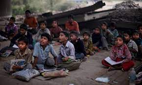
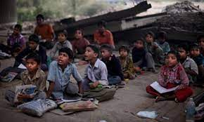

Dear friends,
Together, We Can End Poverty. Join us in our mission to end poverty worldwide. Your donation can make a real difference in the lives of those in need. Together, we can provide food, shelter, education, and hope for a better future. Every contribution, no matter how small, helps us move one step closer to our goal. Donate today and be a part of the change! Global Poverty Eradication NetworkWe are dedicated to eliminating poverty by providing assistance through our website to those in need. Here's how we do it
At our organization we do process to verify donar :
1)Application Process: Individuals complete a form on our website, providing necessary information.
2)Verification: We verify their information through various methods, including requesting government-approved income certificates.
3)Assessment: Our team of over 1000 volunteers conducts on-site visits to assess living conditions and employment status.
4)Tailored Support: Each volunteer caters to the specific needs of the individual.
5)Direct Aid: To prevent misuse of donations, we provide direct aid in the form of essential items. In cases where education expenses are involved, our volunteers personally visit schools to pay for expenses.
6)Entrepreneurship Support: We offer business startup kits to many individuals to help them become self-sufficient.
 


Contact Information
If you have any questions or would like to learn more about how you can get involved, please feel free to contact us:
Email: kamdhenuchariabletrsust@gmail.com
Phone: 9834702684
© 2024 Donation Camp. All rights reserved.